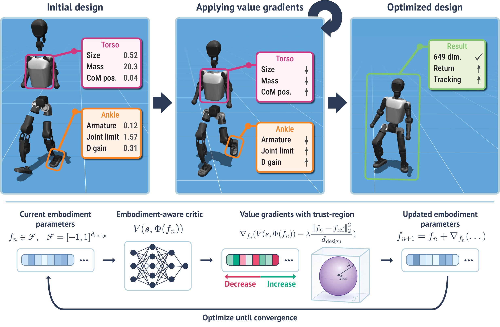
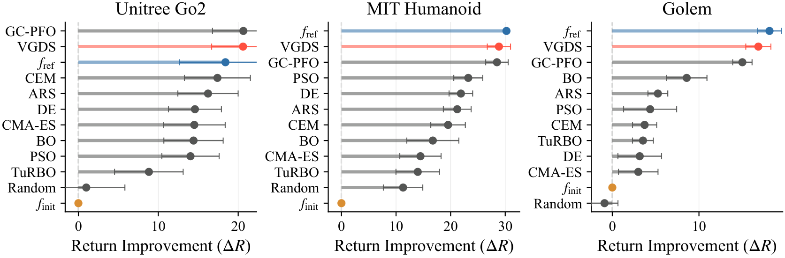
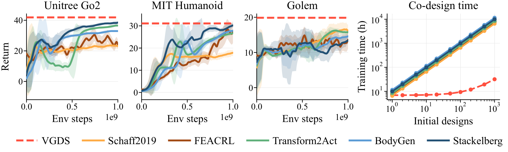
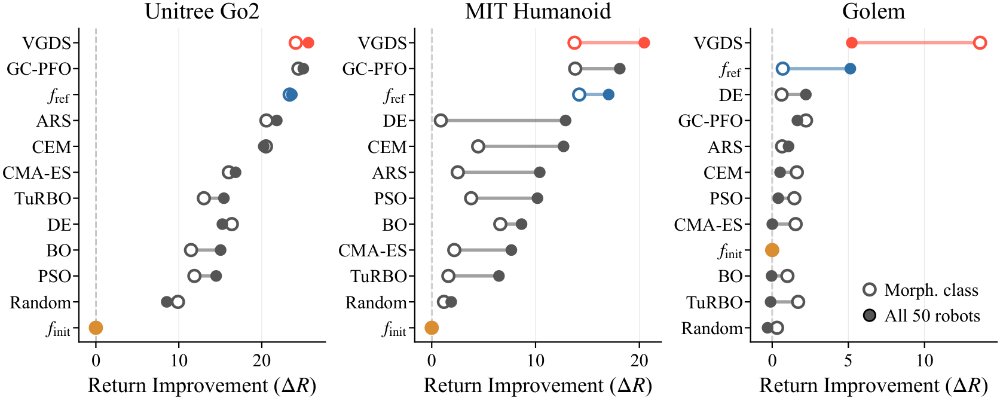
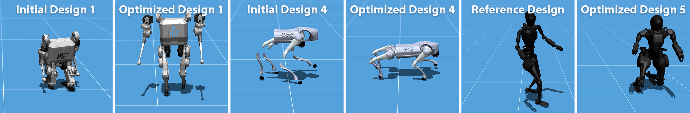
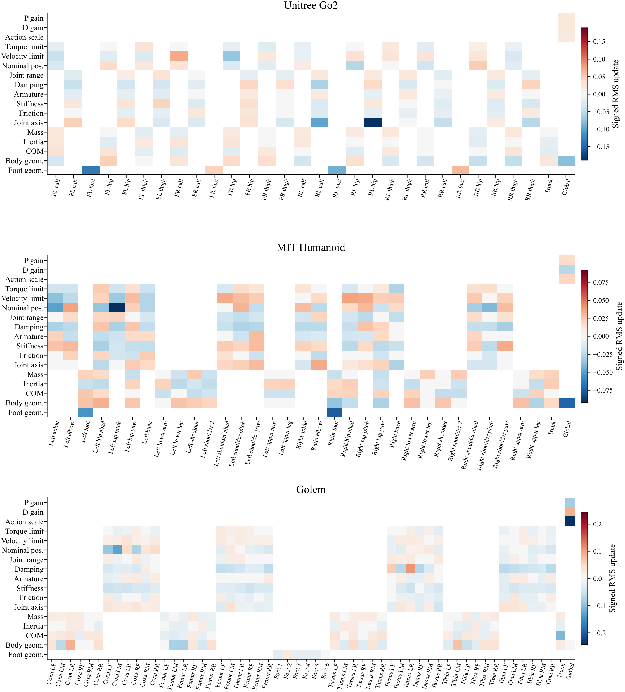

Shape Your Body:
Value Gradients for Multi-Embodiment Robot Design
Under Review
TLDR: Train one multi-embodiment policy and value function, then design hundreds of new robots with value gradients in just minutes.
Try It Yourself
Choose a robot and inspect how Value-Gradient Design Search (VGDS) changes its embodiment. Reference is the nominal URDF, and Co-Design shows the optimized design from a perturbed start. Use the sliders to explore the designs and control the policy live.
Live browser demo: an URMA policy runs locally for the selected robot and design. Velocity commands steer the policy.
Overview
Can a value function trained across many robots become a reusable design model? We train one embodiment-aware policy and value function across a broad robot distribution. After training, the value function is frozen and reused as a differentiable surrogate: new robots are optimized by following value gradients inside a soft trust region, over design spaces with more than 1100 parameters.

Value-Gradient Design Search
During training, each environment samples a robot design and keeps it fixed for the episode. A Unified Robot Morphology Architecture (URMA)-based policy and direct-design critic learn to control and evaluate the full design distribution with PPO. The critic receives embodiment information more directly than the standard URMA critic, which yields stronger design gradients.
After RL training, VGDS optimizes a normalized design vector \(f\) by ascending the frozen critic's prediction over a fixed state bank, while staying close to a reference design \(f_{\mathrm{ref}}\):
Each step follows the value gradient, applies the trust-region penalty, and clips the result back into the valid design space:
This gives a design loop based on one trained model that can be batched and reused for many robots.
Multi-Embodiment Training Set
Our largest training set contains 50 robots: 15 quadrupeds, 31 bipeds and humanoids, and 4 hexapods. One URMA policy and critic are trained across all of them, with randomization over masses, inertias, geometry, joint limits, PD gains, and actuator properties. Each robot has 190 to 1177 continuous design parameters.

Single-Robot Design
First, we train one policy and critic per target robot, then optimize perturbed designs of that same robot. Across the Unitree Go2 quadruped, MIT Humanoid, and Golem hexapod, VGDS matches or outperforms strong surrogate-search baselines, including BO, CMA-ES, PSO, CEM, DE, ARS, TuRBO, and GC-PFO.

Against adapted RL-based co-design baselines, VGDS reaches similar or slightly better final return. The main difference is cost: RL baselines train a new policy for every initial design, while VGDS trains once. After one 7–9 hour training run, each additional design takes only 1–2 minutes of search.

Generalization Across Robots
We then train reusable policies and critics on morphology-class robot sets, with the target robot held out, and on the full 50-robot set. With all 50 robots, VGDS improves beyond the nominal URDF for Unitree Go2 and MIT Humanoid and Golem. For Golem, the hexapod-only model performs best, likely because the full 50-robot set is dominated by quadrupeds and bipeds.

Optimized Designs
Starting from perturbed designs, VGDS reshapes the embodiment to improve the frozen policy's return. Here we show optimized Unitree Go2, MIT Humanoid, and Fourier GR1-T2 designs. For several tall humanoids, VGDS reshapes robots to be smaller, wider, and more compact, which appears to improve stability.

Design Analysis with Value Gradients
The same value gradients also reveal which design and control parameters matter. We group the update f* − fref by body part and parameter type, turning the optimized design into a diagnostic tool.
For the MIT Humanoid, the strongest changes are nominal joint positions, PD gains, and reduced foot size. For the Golem, VGDS reduces the action scale, lowers the P gain, and increases the D gain. For the Unitree Go2, the changes are more physical: rear-leg joint axes, foot geometry, and front hip/calf actuator velocity limits. The full improvement comes from coupled high-dimensional updates, but the grouped analysis points to bottlenecks in the design that an engineer should inspect first.

Paper (soon)
Code (soon)
Video (soon)